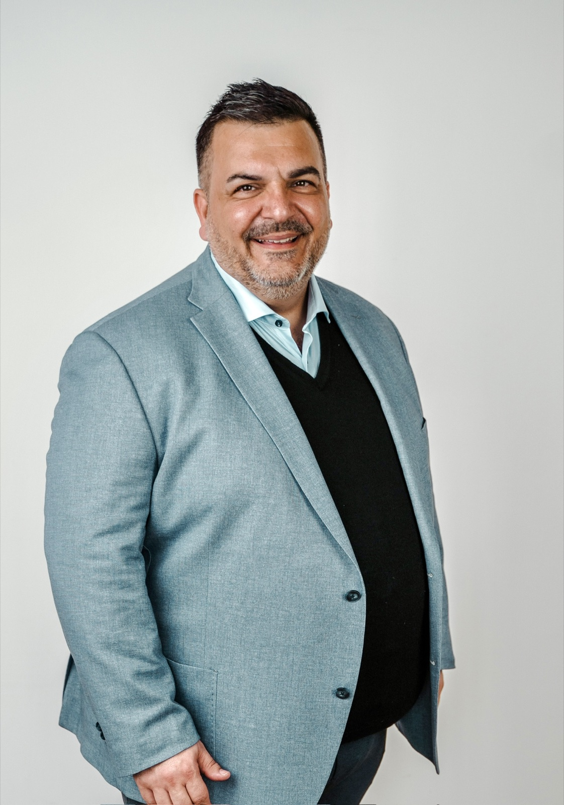

Zuhause
In Urbar verwurzelt
Hier lebe ich mit meiner Familie. Hier kenne ich die Menschen und die Themen, die sie bewegen.
Familienmensch · Unternehmer · Kommunalpolitiker
Ich bin Geschäftsführer der vinofy GmbH und engagiere mich im Ortsgemeinderat Urbar und im Verbandsgemeinderat Vallendar. Hier schreibe ich über meine Arbeit, persönliche Positionen und Ideen für unseren Alltag vor Ort.

Über mich
Ich bin Marco Pusceddu: Familienvater, Unternehmer und Kommunalpolitiker. Urbar ist mein Zuhause und genau hier möchte ich etwas bewegen.
Beruflich bin ich Geschäftsführer der vinofy GmbH. Mein fachlicher Hintergrund liegt im Weinbau, in der Önologie und in der Betriebswirtschaft. Dazu kommt mein Interesse an digitalen Lösungen, die im Alltag helfen.
Im Ortsgemeinderat Urbar und im Verbandsgemeinderat Vallendar möchte ich Entscheidungen nachvollziehbar machen und konkrete Verbesserungen voranbringen. Was ich sinnvoll finde, begründe ich. Wo Fragen offen sind, benenne ich sie.
Zuhause
Hier lebe ich mit meiner Familie. Hier kenne ich die Menschen und die Themen, die sie bewegen.
Beruf
Geschäftsführer der vinofy GmbH, Diplom-Ingenieur für Weinbau und Önologie sowie Betriebswirt (VWA).
Haltung
Klar in der Sache, offen im Gespräch und nah an den Menschen.
Urbar
Nah an den Themen, die unseren Alltag bestimmen. Zuhören, abwägen und Entscheidungen treffen, die Urbar voranbringen.
CDU-Fraktion in UrbarVallendar
Über Ortsgrenzen hinweg gemeinsam gestalten: verlässlich, lösungsorientiert und mit Blick auf das Machbare.
CDU-Fraktion im Verbandsgemeinderat„Ich glaube an ehrliche Gespräche und daran, dass Veränderung im Kleinen beginnt.“
Marco Pusceddu
Aktuelles
Hier schreibe ich über Themen, die mich in Urbar und Vallendar beschäftigen.
Alle Beiträge ansehenDie Organisationshoheit des Bürgermeisters verdient Respekt. Vorschläge für eine bessere Verwaltung verdienen eine sachliche Prüfung.
Beitrag lesenWeitere Beiträge
Zum vollständigen ArchivEine realitätsnahe Jahresübung zeigte, wie Ausbildung, Zusammenarbeit und moderne Technik im Ernstfall ineinandergreifen.
Beitrag lesenVier Wohnungen bleiben möglich. Die zusätzliche Verdichtung auf sechs Wohnungen über den Bauturbo haben wir nicht mitgetragen.
Beitrag lesenEin eigener Ort für persönliche Positionen, meine Arbeit und konkrete Projekte in Urbar und Vallendar.
Beitrag lesenBund und Land bestellen. Fehlt das Geld, zahlen am Ende die Kommunen und ihre Bürger.
Beitrag lesenEin Workshop allein schützt niemanden. Aus Vorschlägen müssen konkrete Maßnahmen werden.
Beitrag lesenWas gebaut wird, wie gerechnet wird und was Eigentümer bei ihrem Bescheid prüfen sollten.
Beitrag lesen